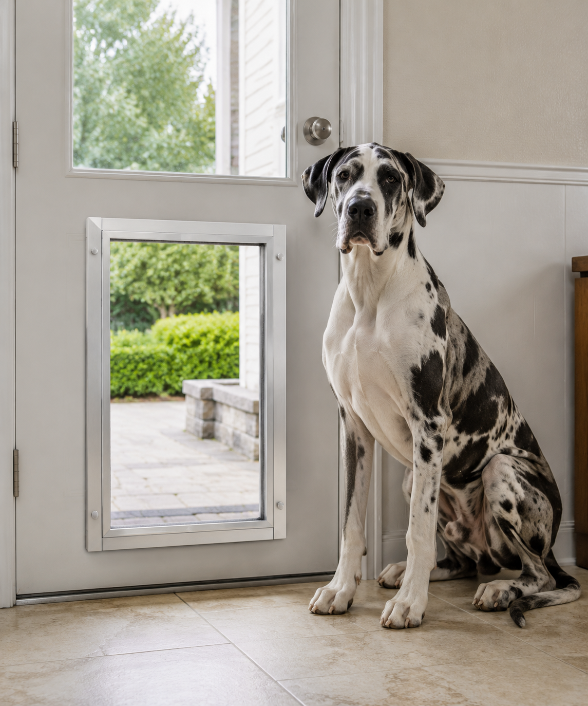
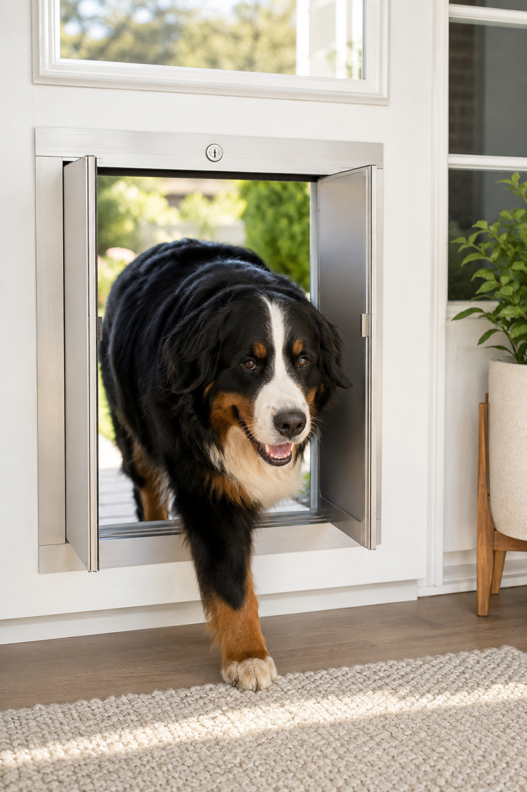
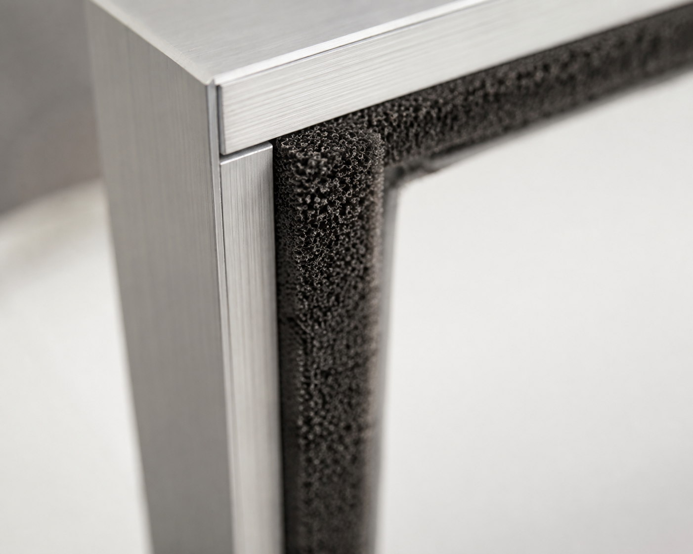
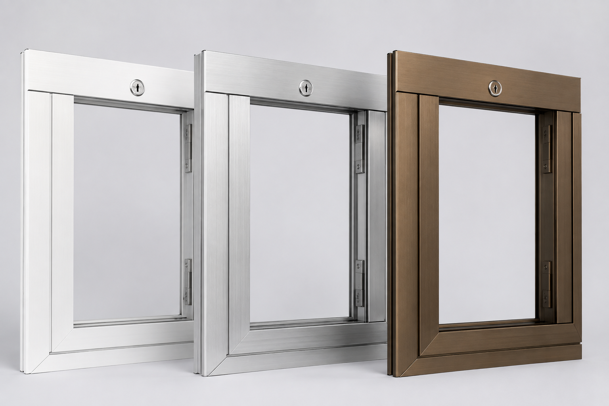
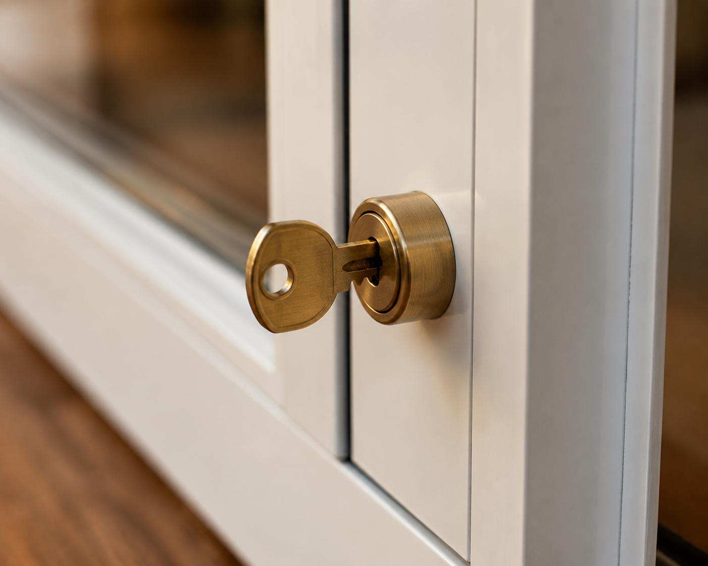

No vinyl flap. No slapping in the wind. No draft creeping in around the edges. Just a solid, weatherproof panel system built from aircraft-grade materials, sized for everything from a terrier to a Great Dane.
Most pet doors on the market are a thin vinyl or rubber flap stapled onto a frame. They flap in the wind, crack or tear within a year or two, and let a surprising amount of conditioned air leak straight out of the house every single time your dog uses them.
Here's what most people don't realize: a flap door usually needs replacing within a year or two of daily use — this style is built to run daily for twenty-plus years.
That's because it isn't a flap at all. It uses two solid, saloon-style panels mounted on precision spring hinges inside a reinforced aluminum frame — the kind of swinging-door mechanism you'd see on a café door, scaled down. The panels themselves are made from a shatter-resistant composite, similar to the material used in aircraft windshields, not the thin acrylic you'd expect at this price point.

Sized generously enough that even giant breeds don't have to duck.
A dense weather seal runs along every edge of the panel, which is the part that's genuinely hard to picture until you've felt it — there's almost no draft where the door meets the frame, even installed somewhere drafty like a basement door or a mudroom. Over a year, that difference shows up on your energy bill, especially with a dog going in and out constantly.


It also comes with a built-in lock and key, so the house can be sealed completely at night, while traveling, or with a new dog you're not ready to trust unsupervised yet — a feature flap doors simply don't have.

Available in white, silver, or bronze — Medium through Extra-Large.
Sizing runs from Medium up through Extra-Large, in white, silver, or bronze frame finishes, and the largest size comfortably fits giant breeds — Great Danes, Mastiffs, Saint Bernards — which is exactly where flap doors tend to fail fastest.
It costs more upfront than a flap door, and that's the honest trade-off. But the pattern among long-term owners is consistent: people who've had one for five, ten, even twenty-plus years say the same thing — they wish they'd bought it the first time, instead of replacing cheaper doors two or three times over.
Available in Medium through Extra-Large, with a lock, a weather seal, and a build quality meant to outlast the dog it was bought for.
Quick, honest note: I'm an Amazon Associate, and the links on this page are affiliate links. If you buy through them, I earn a small commission at no extra cost to you. I only point you toward things I've actually researched and would put in front of my own dog.